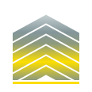
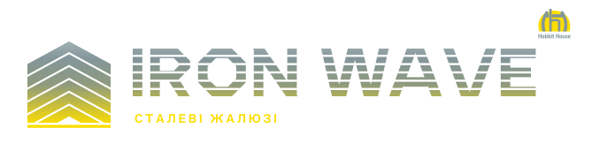
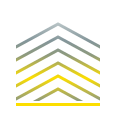
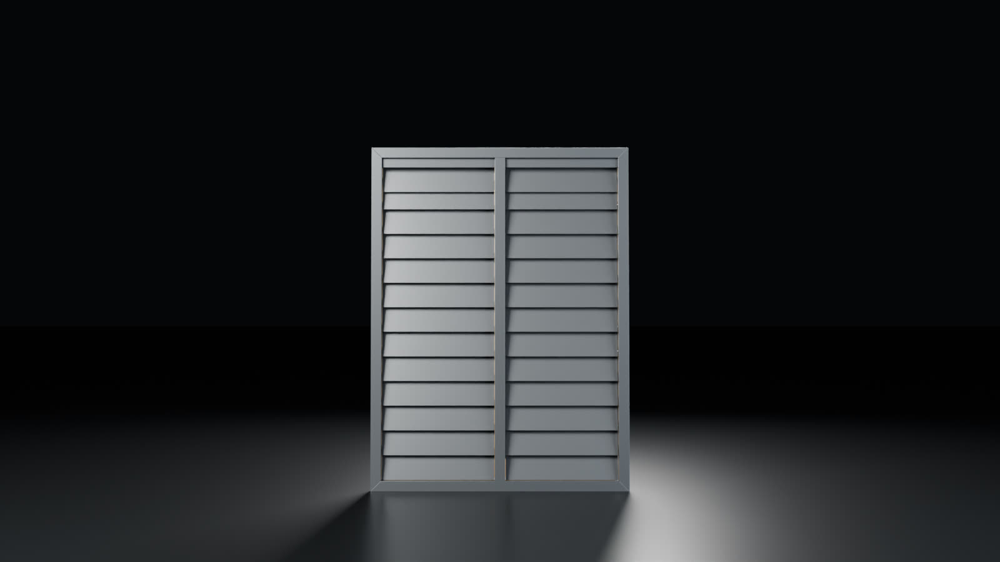

Закрити вікна за тривогою
Поворот ручки — і обидві стулки закриті сталевими ламелями. Виходити назовні не потрібно.

Ведіть ручку вниз — ламелі відкриються
Поворот ручки зсуває тягу — і всі 26 ламелей повертаються разом.
Рама, імпост, ламелі, тяга й ручка.
Не виходячи на вулицю.
Для чого
Під час обстрілу значна частина поранень у будівлях — від уламків скла. Iron Wave ставить сталевий лист між вулицею і склом. Удень ламелі відкриті й пропускають світло, за тривогою їх закривають зсередини однією ручкою.

Поворот ручки — і обидві стулки закриті сталевими ламелями. Виходити назовні не потрібно.
Iron Wave створені, щоб закрити скло сталлю з боку вулиці: уламки з вулиці й осколки розбитого скла не повинні летіти на людей у приміщенні.
Зелений — працюємо. Жовтий — закриваємо. Червоний — в укриття. Відбій — відкриваємо. Одна дія на кожен рівень.

Офіси, магазини з вітринами, приміщення з обладнанням — там, де вікно не закладеш, а скло поруч із людьми.
Жалюзі не замінюють укриття. На червоному рівні люди переходять в укриття.
Як захищає

Закриті ламелі стають одним полотном з боку вулиці — між вулицею і склом.
Ручка зсуває одну тягу, і всі 26 ламелей повертаються разом. Жодна не лишиться відкритою окремо.
Рама, імпост, ламелі, тяга й ручка. Кути рами — на вус 45°.
Ручка — з боку приміщення. Закривати й відкривати можна, не виходячи на вулицю.
Ми не наводимо показників стійкості, доки немає протоколів випробувань саме для жалюзі.
Сценарій
Жалюзі відкриті: денне світло й огляд вулиці.
Ламелі закривають зсередини, не виходячи назовні.
Вікна закриті, люди переходять в укриття.
Ручку повертають назад — ламелі відкриваються.
Ролик
Презентаційний ролик. Сцени загрози й вибуху — комп'ютерна симуляція, а не результат випробувань.
Питання
Зсередини приміщення, однією ручкою. Поворот ручки зсуває тягу — і всі 26 ламелей повертаються разом.
Уся конструкція — сталь: рама, імпост, ламелі, тяга й ручка.